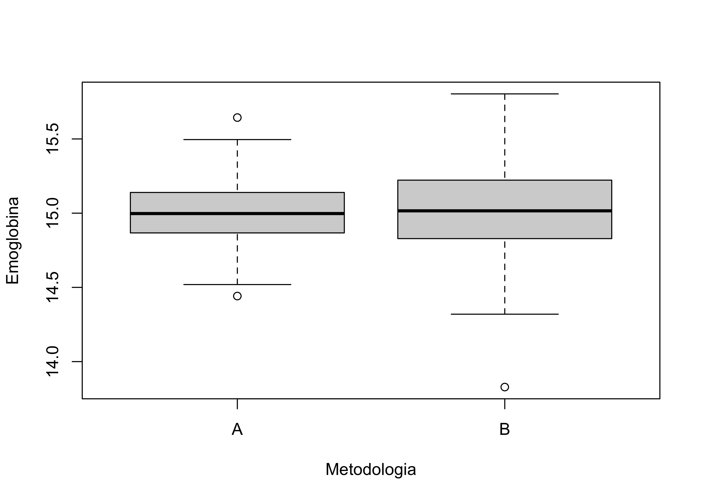

emoglobina <- read.table("../dataset/emoglobina.csv", header = TRUE, sep = ",", stringsAsFactors = TRUE)R per l’analisi statistica multivariata
Unità E: analisi descrittiva dei dati emoglobina
Argomenti affrontati
- Varianza e scarto quadratico medio
- Altre misure di variabilità (campo di variazione, scarto interquartile, MAD)
Descrizione del problema
Siamo interessati a confrontare l’efficacia di due diverse metodologie, chiamate A e B, per la misurazione dell’emoglobina nel sangue.
Si è creato in laboratorio del sangue artificiale contenente 15 grammi di emoglobina ogni 100 \text{cm}^3.
Dal composito sono stati estratti in totale n = 360 campioni.
Di questi, in n_A = 180 campioni l’emoglobina è stata misurata utilizzando la metodologia A mentre per i restanti n_B = 180 campioni è stata usata la metodologia B.
Alcuni dati sono riportati nella prossima slide. Le differenze tra le diverse misurazioni sono da attribuire in larga parte agli errori di misura delle due diverse metodologie.
Importazione dei dati emoglobina
Come fatto in precedenza, anzitutto è necessario scaricare il file emoglobina.csv e salvarlo nel proprio computer. Link al file
In alternativa, possiamo semplice ottenerli usando il link:
path <- "https://tommasorigon.github.io/introR/dataset/emoglobina.csv"
emoglobina <- read.table(path, header = TRUE, sep = ",", stringsAsFactors = TRUE)str(emoglobina)'data.frame': 360 obs. of 2 variables:
$ emoglobina : num 15 15.1 15.2 14.8 15 ...
$ Metodologia: Factor w/ 2 levels "A","B": 1 1 1 1 1 1 1 1 1 1 ...L’opzione stringsAsFactors = TRUE, implica che la variabile Metodologia viene codificata come factor e non come character.
Operazioni preliminari
In questo formato i dati sono difficili da analizzare, quantomeno senza usare le funzioni avanzate *apply così come gli strumenti del cosiddetto tidyverse.
Pertanto, creiamo le due variabili emo_A ed emo_B, contenenti i valori di emoglobina per le due metodologie.
emo_A <- emoglobina$emoglobina[emoglobina$Metodologia == "A"] # Emoglobina gruppo A
emo_B <- emoglobina$emoglobina[emoglobina$Metodologia == "B"] # Emoglobina gruppo B
summary(emo_A) Min. 1st Qu. Median Mean 3rd Qu. Max.
14.44 14.87 15.00 15.00 15.14 15.64 summary(emo_B) Min. 1st Qu. Median Mean 3rd Qu. Max.
13.83 14.83 15.02 15.02 15.22 15.80 boxplot(emoglobina$emoglobina ~ emoglobina$Metodologia,
ylab = "Emoglobina",
xlab = "Metodologia"
)
Da queste prime analisi descrittive si evince che entrambe le metodologie sono, quantomeno in media, ben calibrate. Quale delle due è preferibile?
La varianza I
Ricordiamo che la varianza dei dati x_1,\dots,x_n è pari a
\sigma^2 = \frac{1}{n}\sum_{i=1}^n (x_i - \bar{x})^2 = \left(\frac{1}{n}\sum_{i=1}^n x_i^2\right) - \bar{x}^2.
Possiamo quindi calcolare le varianze dei due gruppi “manualmente”:
mean((emo_A - mean(emo_A))^2) # Varianza del gruppo A[1] 0.0456162mean((emo_B - mean(emo_B))^2) # Varianza del gruppo B[1] 0.09901038mean(emo_A^2) - mean(emo_A)^2 # Varianza del gruppo A, formula alternativa[1] 0.0456162mean(emo_B^2) - mean(emo_B)^2 # Varianza del gruppo B, formula alternativa[1] 0.09901038La metodologia B è quindi caratterizzata da una variabilità maggiore.
La varianza II
Per praticità, creiamo una nuova funzione chiamata my_var che calcola la varianza di un generico vettore x. Pertanto avremo:
my_var <- function(x) {
mean(x^2) - mean(x)^2
}
my_var(emo_A)[1] 0.0456162my_var(emo_B)[1] 0.09901038In R è presente la funzione var, tuttavia questa calcola una quantità leggermente diversa, ovvero
\texttt{var(x)} = \frac{1}{n-1}\sum_{i=1}^n (x_i - \bar{x})^2,
ovvero lo stimatore corretto della varianza.
Il motivo non è chiaro? Verrà presto affrontato a Statistica 2.
La varianza III
La differenza my_var e var è, in pratica, sostanzialmente trascurabile in questo caso, infatti:
var(emo_A)[1] 0.04587104var(emo_B)[1] 0.09956351Scarto quadratico medio
Lo scarto quadratico medio è la radice quadrata della varianza, ovvero \text{sqm}(x) = \sigma = \sqrt{\sigma^2}.
Creiamo quindi un’opportuna funzione R chiamata my_sd per il suo calcolo.
Anche in questo caso, si faccia attenzione che il comando sd di R invece calcola il valore di
\texttt{sd(x)} = \sqrt{\frac{1}{n-1}\sum_{i=1}^n (x_i - \bar{x})^2}.
my_sd <- function(x) {
sqrt(my_var(x))
}
my_sd(emo_A)[1] 0.2135795my_sd(emo_B)[1] 0.3146591sd(emo_A)[1] 0.2141753sd(emo_B)[1] 0.3155369Campo di variazione
Il campo di variazione è la differenza tra minimo e massimo della distribuzione, ovvero (\text{``Campo di variazione''}) = x_{(n)} - x_{(1)}, dove x_{(1)} e x_{(n)} rappresentano rispettivamente il minimo ed il massimo dei dati.
Sebbene non esista una funzione specifica per il suo calcolo, possiamo usare i seguenti comandi
max(emo_A) - min(emo_A)[1] 1.20242max(emo_B) - min(emo_B)[1] 1.97508diff(range(emo_A))[1] 1.20242diff(range(emo_B))[1] 1.97508Scarto interquartile
Lo scarto interquartile è la differenza tra il terzo ed il primo quartile, ovvero (\text{``Scarto interquartile''}) = \mathcal{Q}_{0.75} - \mathcal{Q}_{0.25}.
È molto più resistente della varianza in presenza di poche osservazioni estreme.
La sua implementazione in R è la seguente:
interquartile_range <- function(x) {
diff(quantile(x, probs = c(0.25, 0.75)))
}
interquartile_range(emo_A) 75%
0.2699275 interquartile_range(emo_B) 75%
0.3929925 Mean absolute deviation (MAD)s
L’indice di variabilità MAD (Median Absolute Deviation) è definito come segue \text{MAD} = \text{Mediana}(|x_1 - \text{Me}_x|, \dots, |x_n - \text{Me}_x|), \qquad \text{Me}_x = \text{Mediana}(x_1,\dots,x_n).
Per il suo calcolo, creiamo una funzione appropriata:
MAD <- function(x) {
median(abs(x - median(x)))
}Il MAD della variabili emo_A ed emo_B è quindi pari a
MAD(emo_A)[1] 0.135795MAD(emo_B)[1] 0.198025La funzione tapply I
Esiste un metodo più elegante e veloce per ottenere questi risultati, basato sulla funzione tapply.
La funzione tapply(x, group, fun) applica una certa funzione fun ad un insieme di dati x, per ciascun gruppo group.
Per esempio, la media aritmetica di emo_A ed emo_B si ottiene come segue:
tapply(emoglobina$emoglobina, emoglobina$Metodologia, mean) A B
15.00289 15.02171 with(emoglobina, tapply(emoglobina, Metodologia, mean)) # In maniera ancora più compatta A B
15.00289 15.02171 La funzione tapply II
Pertanto, possiamo ottenere i vari indici di variabilità come segue:
tab <- rbind(
with(emoglobina, tapply(emoglobina, Metodologia, my_var)),
with(emoglobina, tapply(emoglobina, Metodologia, my_sd)),
with(emoglobina, tapply(emoglobina, Metodologia, interquartile_range)),
with(emoglobina, tapply(emoglobina, Metodologia, MAD))
)
rownames(tab) <- c("Varianza", "Deviazione Standard", "Scarto interquartile", "MAD")
tab A B
Varianza 0.0456162 0.09901038
Deviazione Standard 0.2135795 0.31465915
Scarto interquartile 0.2699275 0.39299250
MAD 0.1357950 0.19802500Esercizio riassuntivo
La misura di asimmetria di uso più comune è il cosiddetto indice di asimmetria standardizzato di Pearson, definito come \gamma = \frac{1}{\text{sqm}(x)^3} \frac{1}{n} \sum_{i=1}^n (x_i - \bar{x})^3 = \frac{1}{n} \sum_{i=1}^n \left(\frac{x_i - \bar{x}}{\sigma}\right)^3.
- Si crei una funzione opportuna per il suo calcolo.
Soluzione dell’esercizio riassuntivo
# Prima possibile implementazione
asym <- function(x) {
sqm <- sqrt(mean(x^2) - mean(x)^2)
mean((x - mean(x))^3) / sqm^3
}
# Implementazione (leggermente) alternativa
asym <- function(x) {
sqm <- sqrt(mean(x^2) - mean(x)^2)
z <- (x - mean(x)) / sqm
mean(z^3)
}
asym(emo_A)[1] 0.09535216